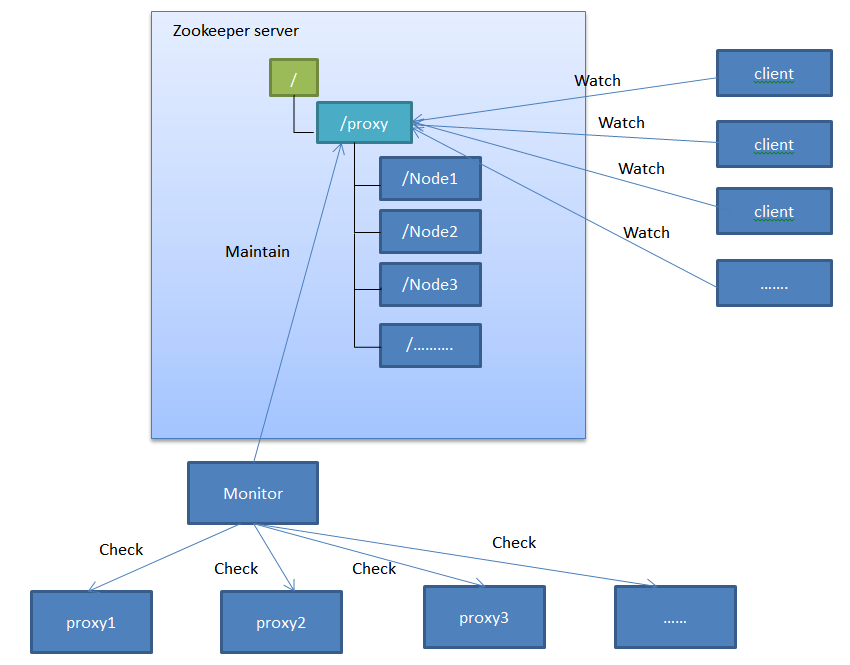

前言
关于zookeeper的介绍什么的就不提了，先描述一下问题：voldemort在上线之后，为了兼容以前使用memcached的业务，提供了一套支持memcached协议的Proxy服务，该基本逻辑就是接收memcached协议的请求---》对请求进行解析，并包装成成voldemort协议请求---》发送到voldemort后端---》返回voldemort协议的数据---》解析成memcached协议的数据---》返回客户端
基本就是这样一个流程，为了提高访问速度、减少后端压力，还为每个Proxy服务加上了本地缓存。这样以前的业务代码几乎不需要修改（只改一下memcahed的ip列表即可），就可以使用voldemort。
但是，这样的结构有一个问题，由于memcached的一致性hash是客户端进行的，如果有节点挂掉，客户端不做出调整，还是根据之前的服务器列表进行进行hash，就会导致落在挂掉节点的数据不可用，这显然是不可接受的，为了 快速 解决这个问题，我们使用了zookeeper。
方案
使用zookeeper解决Proxy单点问题是通过在zookeeper中目录变化实现的。
1）建立“/proxy”目录，然后根据proxy节点创建子目录“/node..”（每个/node目录都包含ip的数据）， 2）Monitor服务，通过定时校验proxy的状态，动态删除或者创建/node目录 3）proxy 客户端，通过Watch “/proxy”目录的变化来决定是否重新加载memcahed列表
部署试图如下： 
Java示例代码：
public static void main(String[] args) throws Exception {
String root ="/proxy";
Map<String,byte[]> nodeIpMap = new HashMap<>();
nodeIpMap.put("/node1", "172.30.204.192".getBytes());
nodeIpMap.put("/node2", "172.30.204.218".getBytes());
nodeIpMap.put("/node3", "172.30.204.181".getBytes());
RetryPolicy retryPolicy = new ExponentialBackoffRetry(1000, 3);
CuratorFramework client = CuratorFrameworkFactory.newClient("172.30.204.194:2181", retryPolicy);
client.start();
if(client.checkExists().forPath(root)!=null){
List<String> childrenPaths = client.getChildren().forPath(root);
for (String subPath : childrenPaths) {
client.delete().forPath(root+"/"+subPath);
}
client.delete().forPath(root);
}
if(client.checkExists().forPath(root)==null){
client.create().withMode(CreateMode.PERSISTENT).forPath(root,"proxy".getBytes());
}
//创建节点
for (String key : nodeIpMap.keySet()) {
if(client.checkExists().forPath(key)==null){
client.create().withMode(CreateMode.PERSISTENT).forPath(root+key, nodeIpMap.get(key));
}
}
// 删除节点
client.delete().inBackground().forPath("/proxy/node3");
// 注册Watch
client.getData().watched().inBackground(new BackgroundCallback(){
@Override
public void processResult(CuratorFramework client,
CuratorEvent event) throws Exception {
System.out.println(event.getName()+"------"+event.getPath()+"--------"+event.getWatchedEvent());
List<String> childrenPaths = client.getChildren().forPath(event.getPath());
for (String subPath : childrenPaths) {
//System.out.println(subPath);
String data = new String(client.getData().forPath(event.getPath()+"/"+subPath));
System.out.println("path："+event.getPath()+"/"+subPath+" data："+data);
}
}
}).forPath(root);
Thread.currentThread().sleep(100000);
client.close();
}
看到上面的代码可能会比较奇怪，它不是用的zookeeper原始的api，而是Curator，它是这样介绍自己的“Gnava is to Java what Curator is to Zookeeper”
zookeeper的基本使用
基本配置（在conf目录下创建zoo.cfg文件）：
-
单机模式
tickTime=2000 dataDir=/var/lib/zookeeper clientPort=2181
-
集群模式
tickTime=2000 dataDir=/var/lib/zookeeper clientPort=2181 initLimit=5 syncLimit=2 server.1=zoo1:2888:3888 server.2=zoo2:2888:3888 server.3=zoo3:2888:3888
集群模式下除了修改zoo.cfg文件以外，还要配置一个文件myid，这个文件在dataDir目录下，内容就是server的编号（1、2、3什么的）。
各种命令：
# 启动zookeeper服务 $ bin/zkServer.sh start # 启动一个客户端连接到zookeeper服务 $ bin/zkCli.sh -server 127.0.0.1:2181
日期：2014-04-24